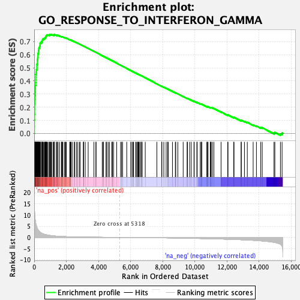
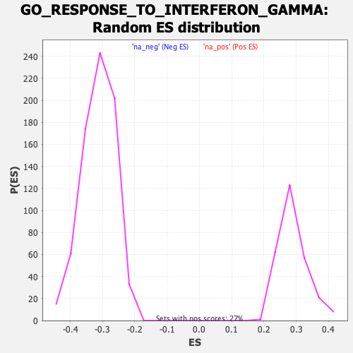

| | | Dataset | DE_genes |
| Phenotype | NoPhenotypeAvailable |
| Upregulated in class | na_pos |
| GeneSet | GO_RESPONSE_TO_INTERFERON_GAMMA |
| Enrichment Score (ES) | 0.7546333 |
| Normalized Enrichment Score (NES) | 2.5943863 |
| Nominal p-value | 0.0 |
| FDR q-value | 0.0 |
| FWER p-Value | 0.0 |
Table: GSEA Results Summary

Fig 1: Enrichment plot: GO_RESPONSE_TO_INTERFERON_GAMMA
Profile of the Running ES Score & Positions of GeneSet Members on the Rank Ordered List
| PROBE | GENE SYMBOL | GENE_TITLE | RANK IN GENE LIST | RANK METRIC SCORE | RUNNING ES | CORE ENRICHMENT | | 1 | CCL8 | | | 7 | 15.196 | 0.0517 | Yes |
| 2 | CCL4 | | | 9 | 14.658 | 0.1019 | Yes |
| 3 | OAS1 | | | 16 | 12.691 | 0.1451 | Yes |
| 4 | CCL11 | | | 22 | 11.788 | 0.1852 | Yes |
| 5 | IFITM2 | | | 23 | 11.709 | 0.2254 | Yes |
| 6 | OAS3 | | | 36 | 9.869 | 0.2585 | Yes |
| 7 | OAS2 | | | 45 | 8.995 | 0.2888 | Yes |
| 8 | WAS | | | 62 | 7.902 | 0.3149 | Yes |
| 9 | IFITM1 | | | 66 | 7.728 | 0.3412 | Yes |
| 10 | CCL7 | | | 70 | 7.435 | 0.3665 | Yes |
| 11 | GBP5 | | | 93 | 6.322 | 0.3868 | Yes |
| 12 | TRIM38 | | | 98 | 6.201 | 0.4078 | Yes |
| 13 | CCL19 | | | 99 | 6.189 | 0.4290 | Yes |
| 14 | GCH1 | | | 100 | 6.188 | 0.4503 | Yes |
| 15 | IFITM3 | | | 123 | 5.548 | 0.4679 | Yes |
| 16 | CCL3 | | | 130 | 5.365 | 0.4859 | Yes |
| 17 | GBP3 | | | 169 | 4.485 | 0.4988 | Yes |
| 18 | OASL | | | 171 | 4.469 | 0.5141 | Yes |
| 19 | LGALS9 | | | 173 | 4.398 | 0.5291 | Yes |
| 20 | GBP4 | | | 200 | 3.826 | 0.5405 | Yes |
| 21 | CCL18 | | | 201 | 3.823 | 0.5536 | Yes |
| 22 | CXCL16 | | | 207 | 3.734 | 0.5661 | Yes |
| 23 | GBP1 | | | 221 | 3.577 | 0.5776 | Yes |
| 24 | TRIM21 | | | 232 | 3.448 | 0.5887 | Yes |
| 25 | STAT1 | | | 233 | 3.445 | 0.6006 | Yes |
| 26 | TRIM22 | | | 241 | 3.342 | 0.6116 | Yes |
| 27 | HLA-DRB5 | | | 264 | 3.081 | 0.6207 | Yes |
| 28 | IRF9 | | | 269 | 3.053 | 0.6309 | Yes |
| 29 | CCL2 | | | 284 | 2.886 | 0.6399 | Yes |
| 30 | HCK | | | 291 | 2.844 | 0.6493 | Yes |
| 31 | IRF2 | | | 318 | 2.629 | 0.6566 | Yes |
| 32 | NMI | | | 339 | 2.523 | 0.6639 | Yes |
| 33 | PARP9 | | | 361 | 2.390 | 0.6708 | Yes |
| 34 | FCGR1A | | | 366 | 2.371 | 0.6786 | Yes |
| 35 | IRF7 | | | 368 | 2.364 | 0.6867 | Yes |
| 36 | IFI30 | | | 398 | 2.213 | 0.6924 | Yes |
| 37 | SOCS1 | | | 462 | 1.885 | 0.6947 | Yes |
| 38 | TRIM5 | | | 465 | 1.865 | 0.7010 | Yes |
| 39 | FCGR1B | | | 504 | 1.738 | 0.7045 | Yes |
| 40 | PML | | | 513 | 1.695 | 0.7098 | Yes |
| 41 | TLR4 | | | 518 | 1.685 | 0.7153 | Yes |
| 42 | B2M | | | 558 | 1.566 | 0.7181 | Yes |
| 43 | CASP1 | | | 565 | 1.546 | 0.7230 | Yes |
| 44 | IRF5 | | | 629 | 1.404 | 0.7237 | Yes |
| 45 | ADAMTS13 | | | 649 | 1.378 | 0.7272 | Yes |
| 46 | HLA-DPA1 | | | 692 | 1.288 | 0.7289 | Yes |
| 47 | TLR2 | | | 698 | 1.278 | 0.7330 | Yes |
| 48 | PARP14 | | | 719 | 1.242 | 0.7359 | Yes |
| 49 | SIRPA | | | 728 | 1.233 | 0.7396 | Yes |
| 50 | HLA-DQA1 | | | 746 | 1.203 | 0.7426 | Yes |
| 51 | AIF1 | | | 771 | 1.159 | 0.7450 | Yes |
| 52 | TP53 | | | 782 | 1.136 | 0.7483 | Yes |
| 53 | GBP2 | | | 792 | 1.122 | 0.7516 | Yes |
| 54 | ACTR3 | | | 849 | 1.041 | 0.7515 | Yes |
| 55 | CD47 | | | 929 | 0.947 | 0.7495 | Yes |
| 56 | CCL5 | | | 937 | 0.940 | 0.7523 | Yes |
| 57 | CLDN1 | | | 989 | 0.868 | 0.7520 | Yes |
| 58 | JAK2 | | | 1017 | 0.832 | 0.7530 | Yes |
| 59 | CDC42 | | | 1055 | 0.795 | 0.7534 | Yes |
| 60 | SP100 | | | 1093 | 0.759 | 0.7535 | Yes |
| 61 | TRIM25 | | | 1185 | 0.692 | 0.7500 | Yes |
| 62 | MEFV | | | 1230 | 0.657 | 0.7493 | Yes |
| 63 | WNT5A | | | 1236 | 0.653 | 0.7513 | Yes |
| 64 | HLA-DPB1 | | | 1240 | 0.651 | 0.7533 | Yes |
| 65 | PTAFR | | | 1254 | 0.637 | 0.7546 | Yes |
| 66 | MID1 | | | 1370 | 0.575 | 0.7491 | No |
| 67 | MT2A | | | 1418 | 0.560 | 0.7479 | No |
| 68 | RAB20 | | | 1472 | 0.531 | 0.7463 | No |
| 69 | HLA-DRA | | | 1481 | 0.526 | 0.7476 | No |
| 70 | CCL20 | | | 1581 | 0.479 | 0.7427 | No |
| 71 | VCAM1 | | | 1695 | 0.435 | 0.7369 | No |
| 72 | CALCOCO2 | | | 1716 | 0.424 | 0.7370 | No |
| 73 | KYNU | | | 1739 | 0.412 | 0.7370 | No |
| 74 | CCL13 | | | 1770 | 0.401 | 0.7364 | No |
| 75 | HLA-G | | | 1870 | 0.363 | 0.7312 | No |
| 76 | TRIM26 | | | 1935 | 0.346 | 0.7282 | No |
| 77 | HLA-DQB1 | | | 1952 | 0.341 | 0.7283 | No |
| 78 | TRIM8 | | | 2002 | 0.326 | 0.7262 | No |
| 79 | SUMO1 | | | 2213 | 0.263 | 0.7134 | No |
| 80 | TRIM31 | | | 2233 | 0.259 | 0.7130 | No |
| 81 | MED1 | | | 2256 | 0.253 | 0.7124 | No |
| 82 | TRIM68 | | | 2298 | 0.244 | 0.7106 | No |
| 83 | ICAM1 | | | 2366 | 0.229 | 0.7070 | No |
| 84 | IFNGR2 | | | 2488 | 0.211 | 0.6998 | No |
| 85 | HLA-DRB1 | | | 2510 | 0.205 | 0.6992 | No |
| 86 | ARG1 | | | 2620 | 0.186 | 0.6927 | No |
| 87 | PTPN2 | | | 2696 | 0.176 | 0.6884 | No |
| 88 | CD44 | | | 2804 | 0.161 | 0.6819 | No |
| 89 | ZYX | | | 2857 | 0.155 | 0.6791 | No |
| 90 | MRC1 | | | 3064 | 0.135 | 0.6660 | No |
| 91 | SLC11A1 | | | 3068 | 0.134 | 0.6663 | No |
| 92 | SOCS3 | | | 3074 | 0.133 | 0.6664 | No |
| 93 | PIAS1 | | | 3175 | 0.125 | 0.6603 | No |
| 94 | PRKCD | | | 3359 | 0.110 | 0.6487 | No |
| 95 | CCL26 | | | 3717 | 0.087 | 0.6257 | No |
| 96 | IRGM | | | 3845 | 0.079 | 0.6177 | No |
| 97 | EDN1 | | | 3846 | 0.079 | 0.6179 | No |
| 98 | JAK1 | | | 4234 | 0.057 | 0.5928 | No |
| 99 | GBP7 | | | 4295 | 0.053 | 0.5891 | No |
| 100 | STAR | | | 4316 | 0.052 | 0.5880 | No |
| 101 | CITED1 | | | 4470 | 0.043 | 0.5781 | No |
| 102 | CX3CL1 | | | 4512 | 0.041 | 0.5756 | No |
| 103 | CAMK2D | | | 4603 | 0.036 | 0.5698 | No |
| 104 | CCL17 | | | 4682 | 0.033 | 0.5648 | No |
| 105 | CIITA | | | 4830 | 0.025 | 0.5553 | No |
| 106 | CCL24 | | | 4863 | 0.023 | 0.5533 | No |
| 107 | ACTR2 | | | 4865 | 0.023 | 0.5533 | No |
| 108 | TRIM62 | | | 4941 | 0.020 | 0.5485 | No |
| 109 | CCL22 | | | 5136 | 0.010 | 0.5358 | No |
| 110 | NUB1 | | | 5379 | -0.003 | 0.5200 | No |
| 111 | IRF6 | | | 5442 | -0.006 | 0.5160 | No |
| 112 | RAB43 | | | 5500 | -0.009 | 0.5123 | No |
| 113 | XCL2 | | | 5760 | -0.024 | 0.4954 | No |
| 114 | CD58 | | | 6017 | -0.040 | 0.4788 | No |
| 115 | IFNG | | | 6033 | -0.041 | 0.4780 | No |
| 116 | ACTG1 | | | 6134 | -0.048 | 0.4716 | No |
| 117 | NOS2 | | | 6136 | -0.049 | 0.4717 | No |
| 118 | PDE12 | | | 6184 | -0.052 | 0.4688 | No |
| 119 | BST2 | | | 6315 | -0.060 | 0.4605 | No |
| 120 | XCL1 | | | 6351 | -0.062 | 0.4584 | No |
| 121 | STXBP2 | | | 6423 | -0.067 | 0.4540 | No |
| 122 | SYNCRIP | | | 6455 | -0.069 | 0.4522 | No |
| 123 | HLA-E | | | 6478 | -0.071 | 0.4510 | No |
| 124 | STXBP3 | | | 6513 | -0.074 | 0.4491 | No |
| 125 | RAB12 | | | 6571 | -0.078 | 0.4456 | No |
| 126 | CCL21 | | | 6653 | -0.085 | 0.4406 | No |
| 127 | IRF3 | | | 6655 | -0.085 | 0.4408 | No |
| 128 | CYP27B1 | | | 6726 | -0.090 | 0.4366 | No |
| 129 | TXK | | | 6912 | -0.103 | 0.4248 | No |
| 130 | STXBP1 | | | 7635 | -0.164 | 0.3782 | No |
| 131 | HLA-DQB2 | | | 7934 | -0.192 | 0.3594 | No |
| 132 | IFNGR1 | | | 7948 | -0.193 | 0.3592 | No |
| 133 | AQP4 | | | 8067 | -0.205 | 0.3522 | No |
| 134 | GAPDH | | | 8213 | -0.219 | 0.3434 | No |
| 135 | IL12RB1 | | | 8306 | -0.230 | 0.3382 | No |
| 136 | HPX | | | 8340 | -0.234 | 0.3369 | No |
| 137 | TLR3 | | | 8605 | -0.263 | 0.3205 | No |
| 138 | HSP90AB1 | | | 8785 | -0.284 | 0.3098 | No |
| 139 | STX4 | | | 8810 | -0.287 | 0.3092 | No |
| 140 | DAPK1 | | | 8939 | -0.303 | 0.3019 | No |
| 141 | CAMK2A | | | 9272 | -0.344 | 0.2813 | No |
| 142 | IRF1 | | | 9517 | -0.375 | 0.2667 | No |
| 143 | STXBP4 | | | 9540 | -0.379 | 0.2665 | No |
| 144 | STX8 | | | 9673 | -0.399 | 0.2593 | No |
| 145 | FLNB | | | 9774 | -0.413 | 0.2541 | No |
| 146 | CD40 | | | 9945 | -0.439 | 0.2445 | No |
| 147 | RPS6KB1 | | | 9960 | -0.441 | 0.2451 | No |
| 148 | NCAM1 | | | 10124 | -0.465 | 0.2361 | No |
| 149 | KIF5B | | | 10145 | -0.469 | 0.2364 | No |
| 150 | CAMK2G | | | 10335 | -0.496 | 0.2257 | No |
| 151 | HLA-DQA2 | | | 10392 | -0.503 | 0.2238 | No |
| 152 | PPARG | | | 10432 | -0.509 | 0.2230 | No |
| 153 | CCL23 | | | 10746 | -0.560 | 0.2044 | No |
| 154 | NLRC5 | | | 10769 | -0.563 | 0.2049 | No |
| 155 | VPS26B | | | 10821 | -0.570 | 0.2036 | No |
| 156 | EVL | | | 10958 | -0.591 | 0.1967 | No |
| 157 | VAMP3 | | | 10997 | -0.596 | 0.1963 | No |
| 158 | IRF8 | | | 11011 | -0.599 | 0.1975 | No |
| 159 | ASS1 | | | 11089 | -0.613 | 0.1945 | No |
| 160 | CDC42EP2 | | | 11185 | -0.632 | 0.1905 | No |
| 161 | CDC42EP4 | | | 11630 | -0.728 | 0.1640 | No |
| 162 | NR1H3 | | | 12044 | -0.813 | 0.1397 | No |
| 163 | UBD | | | 12062 | -0.817 | 0.1414 | No |
| 164 | KIF16B | | | 12417 | -0.908 | 0.1214 | No |
| 165 | RPL13A | | | 12436 | -0.913 | 0.1234 | No |
| 166 | SEC61A1 | | | 12878 | -1.038 | 0.0981 | No |
| 167 | SNCA | | | 12890 | -1.042 | 0.1010 | No |
| 168 | MYO1C | | | 13086 | -1.102 | 0.0920 | No |
| 169 | IRF4 | | | 13264 | -1.160 | 0.0844 | No |
| 170 | VIM | | | 13628 | -1.301 | 0.0651 | No |
| 171 | HLA-F | | | 13831 | -1.392 | 0.0567 | No |
| 172 | SLC26A6 | | | 14099 | -1.533 | 0.0445 | No |
| 173 | NR1H2 | | | 14192 | -1.595 | 0.0440 | No |
| 174 | HLA-H | | | 14925 | -2.193 | 0.0036 | No |
| 175 | GSN | | | 14979 | -2.280 | 0.0080 | No |
| 176 | DAPK3 | | | 15325 | -3.057 | -0.0041 | No |
| 177 | CDC37 | | | 15428 | -3.952 | 0.0028 | No |
Table: GSEA details [plain text format]

Fig 2: GO_RESPONSE_TO_INTERFERON_GAMMA: Random ES distribution
Gene set null distribution of ES for GO_RESPONSE_TO_INTERFERON_GAMMA